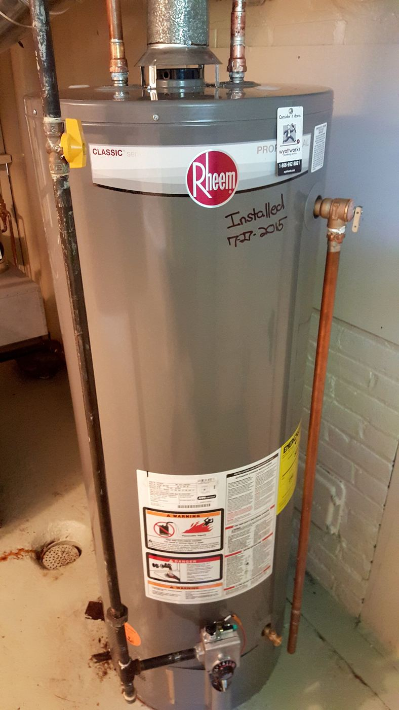
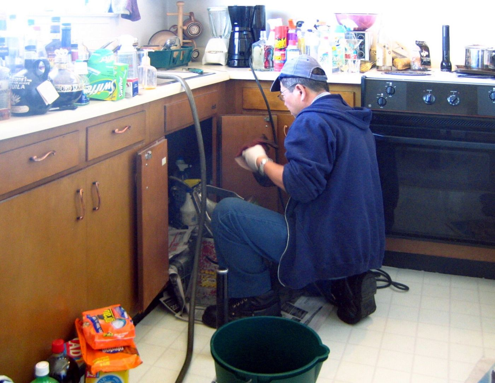
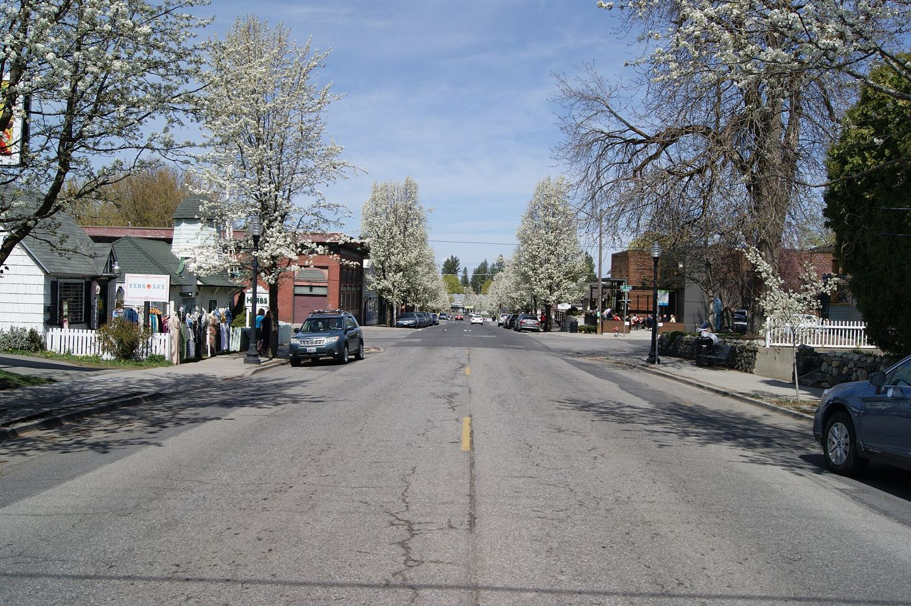
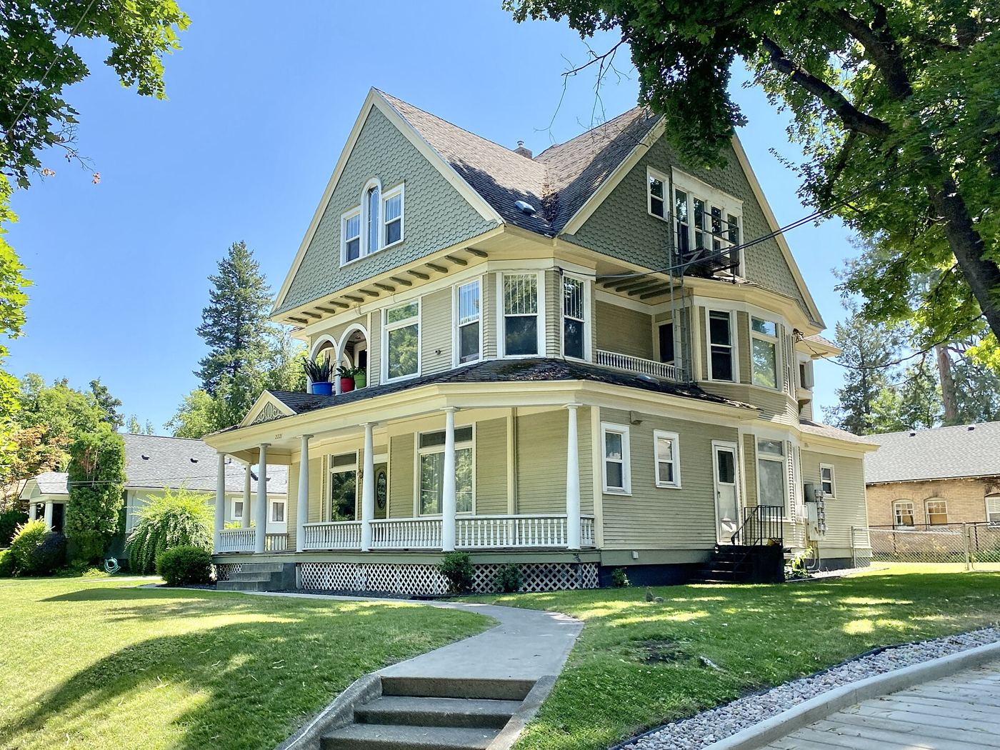
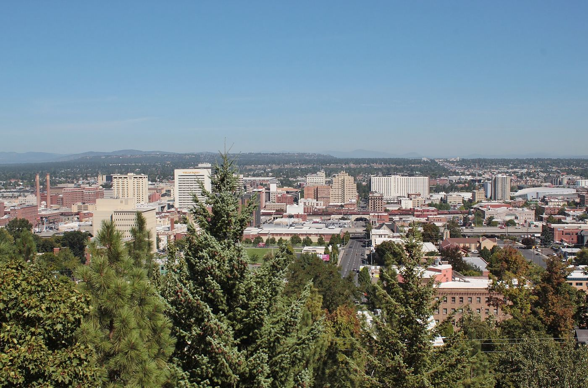

Spokane's family plumber since 2003.
We fix water heaters, clogged drains, leaks and frozen pipes, and we repipe a lot of old houses. We work out of a shop on Market Street, and most of our customers found us because a neighbor told them to call.

What we do
Houses only, and a lot of them are older. We don't do new construction or commercial work, so we have time for the jobs we do take.

Water heaters
Repair, flushing and replacement. Tank or tankless, gas or electric. Most swaps are done the same day.
Water heaters →
Drain cleaning
Kitchen sinks, tubs, toilets and main lines. If roots are getting in, we'll show you on camera.
Drain cleaning →
Leaks
Drips, running toilets, bad shutoffs, and the leak you can't find but can see on your water bill.
Leak repair →
Frozen pipes & winterizing
Thawing, burst pipe repair, and frost-free hose bibs so it doesn't happen again next January.
Frozen pipes →
Repiping older homes
Low pressure or brown water in a house built before 1960 usually means galvanized pipe. We replace it.
Repiping →
Sewer lines
Camera inspections ($225, good idea before you buy a house), plus spot repairs and full replacement.
Sewer lines →
Why people call us back
Somebody answers the phone.
During the day you'll get Jen, who has run our office for 20 years. If she's on the other line, she'll call you back within the hour.
You get the price first.
It's $89 for us to come out and figure out what's wrong. Then we give you a flat price for the job. If you go ahead, the $89 comes off the bill.
We leave it clean.
Boot covers, drop cloths, and we haul away the old water heater or whatever else we pulled out. You shouldn't be able to tell we were there, other than the fixed pipe.
What customers say
These are from our Google reviews. We have 412 of them, and we read every one.
Two other companies told me I needed a $14,000 sewer replacement. Ray ran a camera, showed me the video, and said it was one bad joint near the foundation. Fixed it for $3,900. I've sent him to half my street.
Water heater died on a Sunday night, of course. Called Monday at 7:10 and Marcus was here by 10 with a new one on the truck. Told me the price before he touched anything and that's what I paid. Took the old tank with him.
They told me NOT to replace my water heater yet. Flushed it, put in a new anode rod, about $200 total. Who does that?
Where we work
We're based on the North Side but we cover most of Spokane and the nearby towns.



Neighborhoods and towns we're in every week:
- South Hill
- Manito / Cannon Hill
- Perry District
- Logan & Gonzaga area
- Hillyard
- Garland
- Audubon / Downriver
- Shadle
- Five Mile Prairie
- Indian Trail
- West Central
- Browne's Addition
- Spokane Valley
- Liberty Lake
- Mead
- Airway Heights
Not on the list? Call and ask. For bigger jobs we'll usually make the drive.

How most people find us
For twenty years nearly all of our work came from word of mouth. Somebody's neighbor, somebody's mom, a realtor who's used us on a dozen houses. If someone sent you here, please thank them for us.